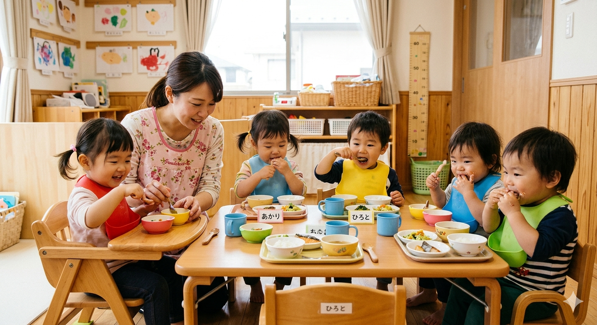

食育について
食事は、ただ栄養をとるだけでなく「楽しい時間」であることを大切にしています。
一人ひとりのペースに寄り添いながら、無理なく“食べる力”を育てていきます。

当園では、園内で手作りしたあたたかい給食を提供し、成長に必要な栄養バランスを大切にした献立を心がけています。
また、離乳食から幼児食まで月齢に合わせた食事を行い、その日の体調や食欲に応じて無理のない対応をしています。
食べることが苦手なお子さまにも無理に食べさせることはなく、「食べてみたい」という気持ちを大切にしながら、少しずつ経験を重ねていきます。
さらに、野菜に触れたり食材に親しむ体験を通して、自然と食への興味が広がるよう工夫しています。
アレルギーについても一人ひとりに合わせて対応し、安心して食事ができる環境を整えています。
- ① 手作り給食 園内で調理したあたたかい給食
- ② 栄養バランス 成長に必要な栄養を考えた献立
- ③ 月齢に合わせた食事 離乳食から幼児食まで対応
- ④ 食べる楽しさ 無理なく「食べたい」を育てる